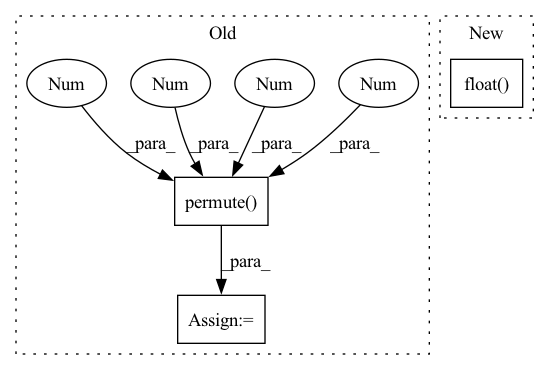

Pattern ID :7136

Before Change
reproTool = reproTools[dataset_name]
num_cameras = imgs_orig.shape[0]
imgs = torch.from_numpy(imgs_orig).cuda().float().permute(0,3,1,2)
points3D_net = jarvisPredictor(imgs, reproTool.cameraMatrices.cuda(), reproTool.intrinsicMatrices.cuda(), reproTool.distortionCoefficients.cuda())
if points3D_net != None:
After Change
reproTool = reproTools[dataset_name]
file_name = sample[-1][0]
imgs = imgs_orig.cuda().float().permute(0,3,1,2)
points3D_net = jarvisPredictor(imgs,
reproTool.cameraMatrices.cuda(),
In pattern: SUPERPATTERN
Frequency: 3
Non-data size: 3
Instances
Fragment ID: 23790851
Project Name: jarvis-mocap/jarvis-hybridnet
Commit Name: 327b43a36cc8aa4995c6e50842b02f3577a1e241
Time: 2022-04-28
Author: jarvismocap@gmail.com
File Name: jarvis/analysis/analyze.py
M Class Name: AnonimousClass
N Class Name: AnonimousClass
M Method Name: analyze_validation_data(5)
N Method Name: analyze_validation_data(5)
M Parent Class:
N Parent Class:
M File Name: jarvis/analysis/analyze.py
N File Name: jarvis/analysis/analyze.py
M Start Line: 28
M End Line: 52
N Start Line: 22
N End Line: 82
'>
Before Change
//with torch.no_grad():
batch_features = self.__cnn__(images) // (N, features_dim, block_num, block_num)
conv_features = self.__img2embed_conv__(batch_features).permute(0, 2, 3, 1) // (N, block_num, block_num, embed_dim * 0.5)
apool = torch.mean(conv_features, dim = 1) // (N, block_num, embed_dim * 0.5)
mpool, _ = torch.max(conv_features, dim = 1) // (N, block_num, embed_dim * 0.5)
imgs_embed = torch.cat([apool, mpool], dim = 2) // (N, block_num, embed_dim)
words_embed = self.__content_embed__(input_ids) // (N, seq_len, embed_dim)
indices = torch.arange(self.seq_len + self.block_num).expand(batch, -1).to(device)
After Change
//batch_texts = self.__clip__.encode_text(text_input)
//tags_embed = self.__text2embed__(self.__clip_drop__(batch_texts.float())).unsqueeze(1)
imgs_embed = self.__img2embed__(self.__clip_drop__(batch_features.float())).unsqueeze(1)
words_embed = self.__content_embed__(input_ids)
indices = torch.arange(self.seq_len + self.tags_num + self.block_num).expand(batch, -1).to(device)
'>
Fragment ID: 23790824
Project Name: siwooyong/codalab-microsoft-coco-image-captioning-challenge
Commit Name: d24b22ec9f0be1acd2f307be20ec85f84f8d8795
Time: 2021-07-08
Author: 68500343+yongsiwoo@users.noreply.github.com
File Name: models/base_model.py
M Class Name: decoder
N Class Name: decoder
M Method Name: forward(4)
N Method Name: forward(3)
M Parent Class: nn.Module
N Parent Class: nn.Module
M File Name: models/base_model.py
N File Name: models/base_model.py
M Start Line: 57
M End Line: 74
N Start Line: 75
N End Line: 97
'>
Before Change
// build xy offsets
grid_x = torch.arange(ng).repeat((ng, 1)).view((1, 1, ng, ng)).float()
grid_y = grid_x.permute(0, 1, 3, 2)
self.grid_xy = torch.stack((grid_x, grid_y), 4).to(device)
// build wh gains
self.anchor_vec = self.anchors.to(device) / self.stride
After Change
// build xy offsets
yv, xv = torch.meshgrid([torch.arange(nx), torch.arange(ny)])
self.grid_xy = torch.stack((xv, yv), 2).to(device).float().view((1, 1, nx, ny, 2))
// build wh gains
self.anchor_vec = self.anchors.to(device) / self.stride
'>
Fragment ID: 23790848
Project Name: nightsnack/yolobile
Commit Name: 14e451962036515076b17b5bc01e89282f62b681
Time: 2019-04-21
Author: glenn.jocher@ultralytics.com
File Name: models.py
M Class Name: AnonimousClass
N Class Name: AnonimousClass
M Method Name: create_grids(4)
N Method Name: create_grids(4)
M Parent Class:
N Parent Class:
M File Name: models.py
N File Name: models.py
M Start Line: 238
M End Line: 243
N Start Line: 237
N End Line: 250